Plane tickets from Taiwan to Hong Kong were only about $160, so while I'm in Taiwan I decided to make a weekend trip! I went alone and was there for 4 days and 3 nights. After being in Taipei for 2 months, Hong Kong definitely has a different feel to it. It's more "big city" than Taipei is.
Airbnb
As someone who graduated college in May and took a trip to Asia instead of immediately starting my job (read: no money), I decided to stay in an Airbnb room. I wanted something cheap and convenient, and found a room that was $30/night in Kowloon close to an MTR station. It was very convenient! My room was my bed and my bed was my room, but I only used the apartment for showering and sleeping so it didn't matter. There were 2 rooms always being rented out. The first night there were two other Chinese girls there so we could speak in Chinese to each other. The other two nights actually had a guy from Taipei so it was interesting we both came from the same city and ended up at the same place!
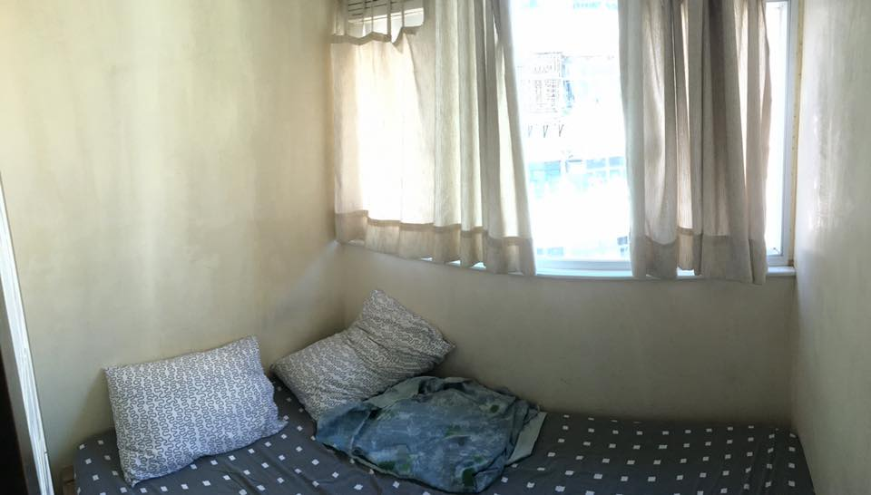Food
During first night in Hong Kong I went out for dim sum with a friend and her friends. It was SO GOOD. For the rest of my meals, I usually tried to find a hole in the wall place to eat at (harder to find than in Taiwan, where you can just walk out of your apartment and find food stalls in any direction). In one restaurant they seated me in a booth across what looked to be Hong Kong's most ancient man. I think Hong Kong people's taste is less sweet than Taiwan's, judging by what shops were around and also the fact that the 7-11s had way more chips and less candy than the 7-11s in Taiwan.
People
After spending 2 months in Taiwan, it was interesting to compare Taiwanese people to Hong Kong people. Taiwanese people seem more shy, but really warm if you actually talk with them. The people in Hong Kong seem less shy, but cashiers, etc seem less patient than Taiwanese people. The styles are also different. I noticed that Hong Kong people wear styles more similar to American styles, while Taiwanese people seem to dress more "cute." Hong Kong is also a very diverse place and definitely has more foreigners than Taiwan. In many places I didn't even feel like a foreigner for the first time in two months! Before I came to Hong Kong I knew that their English was good, but I was surprised by how good their English actually was.
Convenience
Hong Kong's public transportation is pretty good. When I was there I bought an octopus card and used that for the metros, buses, and trams. Ever since I was little, I had wanted to ride a double decker bus, and Hong Kong has plenty! In fact, the first thing I got to do after leaving the airport was board a double decker bus and I was so happy about it.
I was able to buy a pretty cheap SIM card in the airport so I could use cell data during the duration of my trip. I had 5 GBs worth for about $20 USD or so and only ended up using about 1 GB.
Although Hong Kong doesn't have as many 7-11s as Taiwan, they're still plentiful enough to find and grab a bottle of water to stay hydrated when walking around. However, I had trouble finding public bathrooms as not all MTR stations have them (although once I asked an MTR employee where the bathroom was and he let me use a secret unmarked bathroom he unlocked for me).
Tian Tan Buddha
Going to see big Buddha statue in Hong Kong like something a white person who travels to Asia might want to see so there I went. I went directly from the airport to take the cable car to the Buddha (the cable car company held my bags). The view from the cable car was really neat, and the sky was clear so I could see pretty far. The cable car takes you to a little village made of souvenir shops, and past the village is the Buddha and some temples.
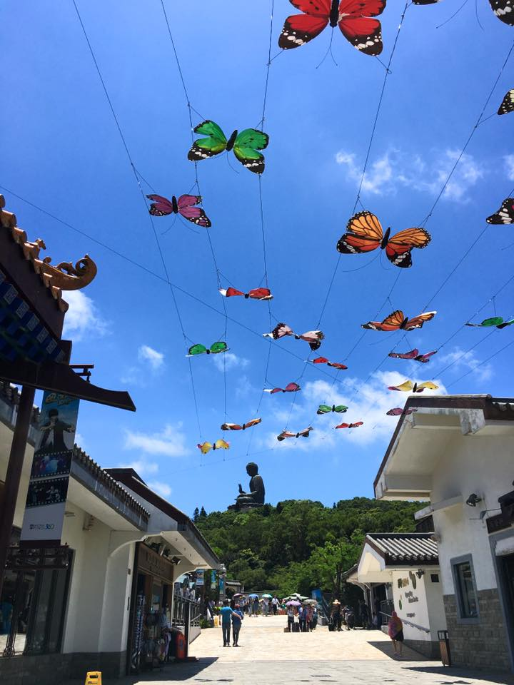To get to the actual Buddha you climb a bunch of steps (no small feat in the Hong Kong heat (that wasn't supposed to rhyme but I'm leaving it)). The view at the top is pretty neat and there are additional smaller statues around the Buddha, as well as a little indoor area you can see some other Buddhist things.
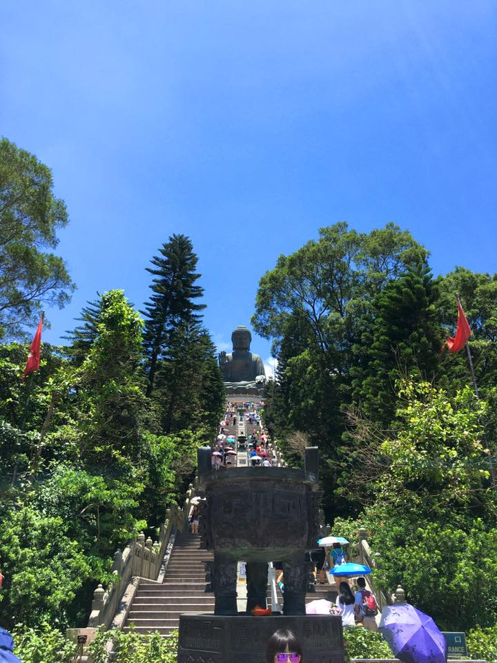At the bottom there are shops selling drinks, souvenirs, fans, etc. The temples are pretty cool and worth seeing. The architecture is so beautiful!
Lan Kwai Fong
If you want to drink while in Hong Kong, I heard this is the place, and it was a lot of fun. It's a few streets/blocks of bars. But since it's in Asia, you can also drink beers outside while walking around, so the streets are full of people, a good portion of them being other foreigners. If you don't want to spend a lot of money at a bar, there are two 7-11s you can buy a cheap beer in. I actually went here both Friday and Saturday, and it was fun!
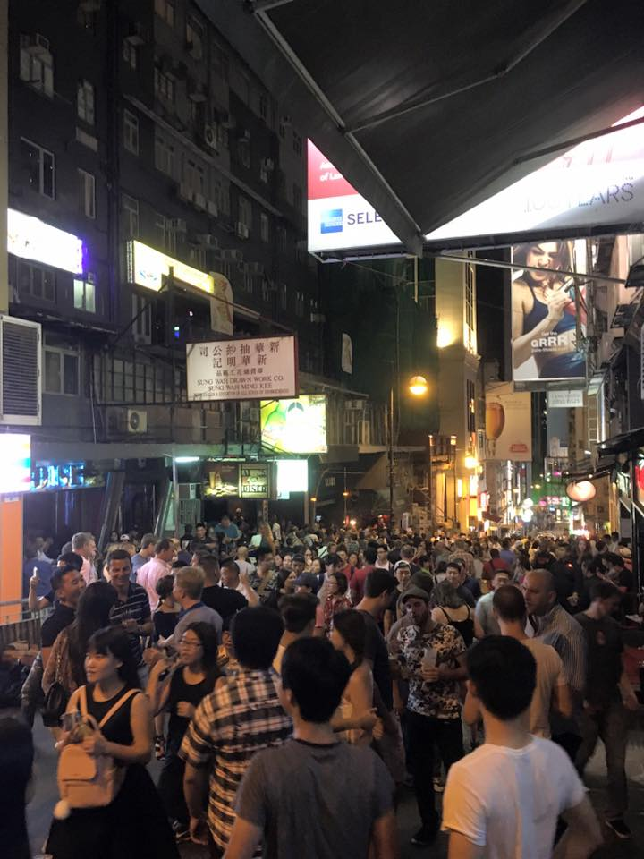Temple Street Night Market/Ladies Market
Admittedly I'm already a bit spoiled from Taiwan's night markets so I was a bit disappointed in the food selection, but these two markets were great if you want to buy some cheap souvenirs. However, you have to bargain! None of the prices are marked, and if you're a foreigner they tell you an extremely marked up price. I was able to bargain down to less than half of the asking price for the few things I bought. I also have a lot of experience from bargaining in Taiwan, but in Hong Kong they are very aggressive about it! It was a lot of fun though. However, many of the items are very cheap things you could probably find online for less money than at these night markets.
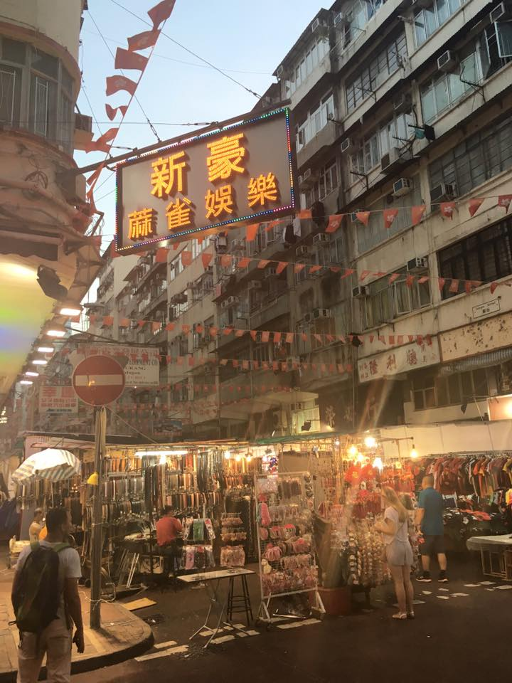Victoria Peak
I figured going to the peak of Victoria Mountain was something I had to do as a tourist. Even though I got to the Peak Tram by 10am, the line was already 45 minutes long! I think the line to the tram could've been handled better..when the tram doors opened it was basically a mad dash to get inside. At one point another woman had blocked me with her arm (even though I was next to enter the tram) so her kids could get on before me but I pushed through. I found a seat by a window and sat down, but then people flooded into the tram and at one point a woman was on my lap trying to save a ton of seats in front of me so I pushed her off of me. The tram ride to the top was nice though, and at the top the view was beautiful! The air was so clean (a friend told me the air is only that clean in the summer) (the clean air was probably why even though I don't get burnt in Taiwan without wearing sunscreen, I got fried my first day in Hong Kong), and the skyline was breathtaking.
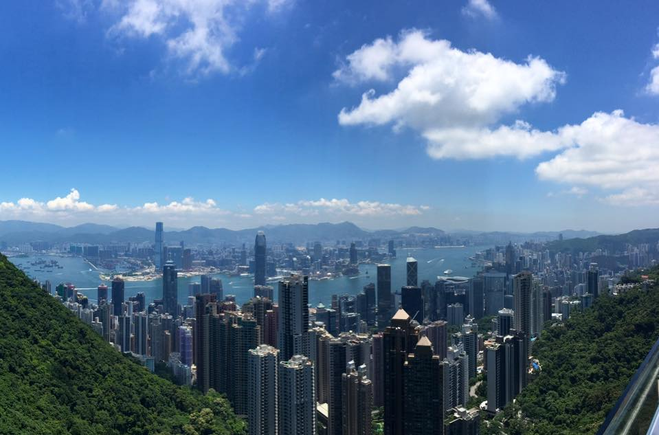Tram Ride
Although there's a tram tour you can take in Hong Kong, you can also just board a tram for less than 50 cents USD and ride it around. I spent a morning doing this and it was so fun! I was able to see many different parts of the city. At the terminal station we had to get off the tram so I walked around and found some breakfast and hopped back on. I got a seat at the very back and was able to take pictures out the open window.
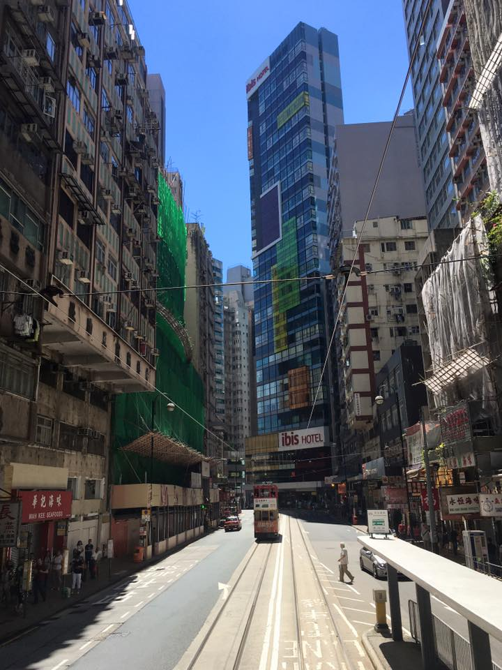Lamma Island
I took a ferry to Lamma Island one afternoon with not much of a plan. I had read up on it a bit before going and it sounded interesting. The island basically has two villages, one on each side, and the ferry drops you off at one of them. Then there's a hiking trail to the other side and you can take that ferry back.
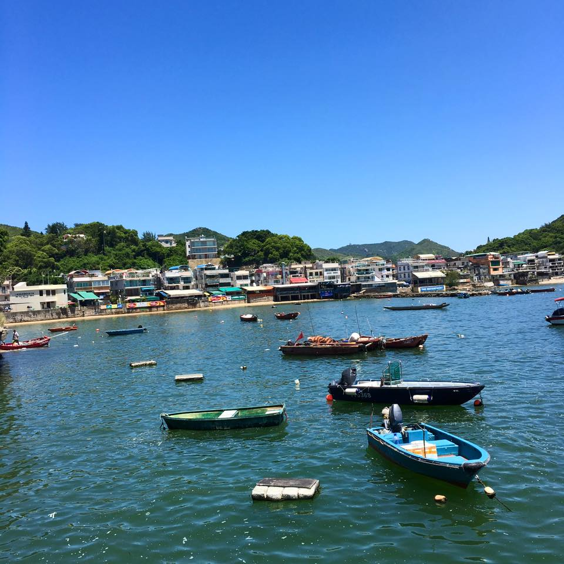The village was pretty cool, the main street had lots of seafood restaurants and little shops. I ate some fish and window shopped a bit, then went to the hiking trail. After about 15 minutes of hiking I came to a beach. They had lockers and showers so I decided to swim in the ocean for a bit. The water had lots of trash and other unidentifiable objects but it was still pretty fun. After about an hour I continued the hike in wet clothes since I didn't plan ahead and bring my swimsuit. However, I probably still would've worn my shorts and T-shirt because all weekend at the touristy spots I had a problem with tourists from some of the other countries sneakily/creepily taking my photo (I guess it's not every day you see a 6'5 girl) without asking me first, and I didn't want pictures of me in a bikini on strangers' phones without my consent.
At the beach there were tons of other foreigners, and I saw a lady from Africa carrying one of those huge 24-pack cases of water bottles on her head walking on the beach, balancing it with no hands! It's hard enough for me to walk on the hot sand carrying nothing so I was very impressed! And I thought it was funny that I came all the way to Hong Kong by myself, to a beach on an island, to see an African lady carrying a heavy case of water on her head.
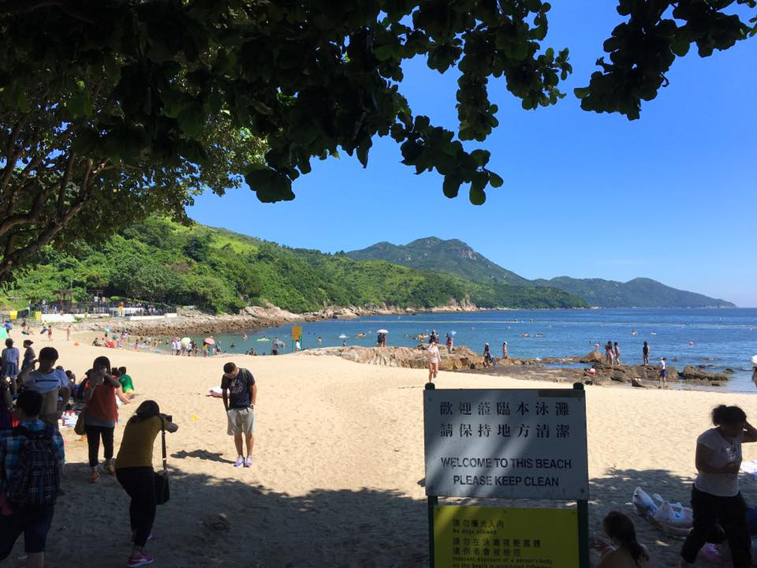Anyways, the hike was pretty fun and interesting. I got to see a kamikaze cave (actually one of the reasons I was interested in Lamma Island because I love WWII things), which are caves that the Japanese had planned to fill with speed boats and use in kamikaze attacks, but the war ended before the plan ever got carried out. Then after about 1.5 hours I arrived at the other town. I ate some frozen pineapple and headed back to Hong Kong! It was very tiring and very fun.
Bird Market
The bird market was probably one of my favorite things in Hong Kong even though I stayed for less than 20 minutes. There were a bunch of older Hong Kong ladies and men buying and selling birds. Some of the men were also loudly playing card games and drinking beer. Meanwhile there were cages and cages of all kinds of birds (maybe inhumane) and lots of wild birds who were attracted to the sounds. I LOVE birds, so this was great. There were also no tourists around besides me.
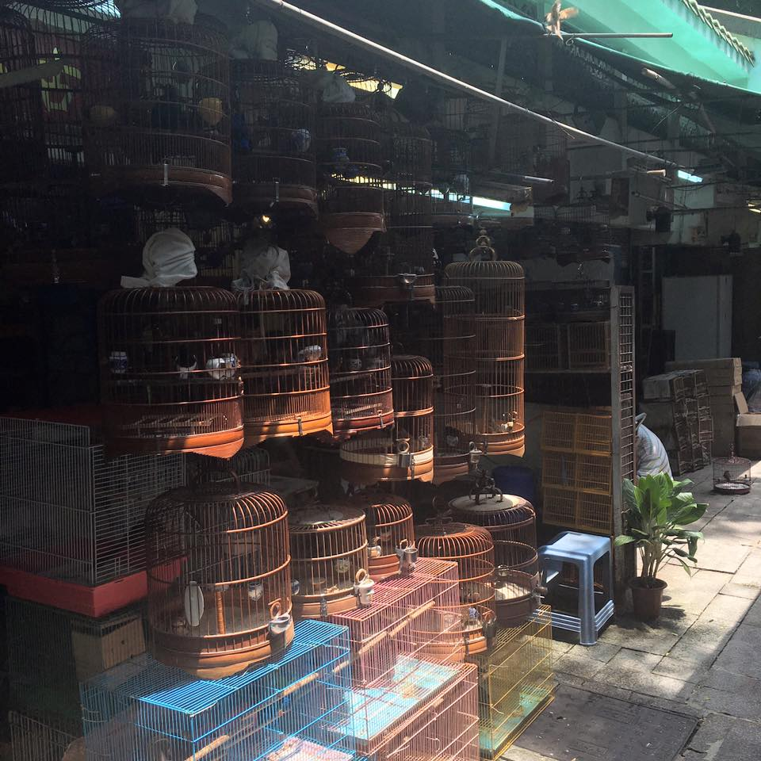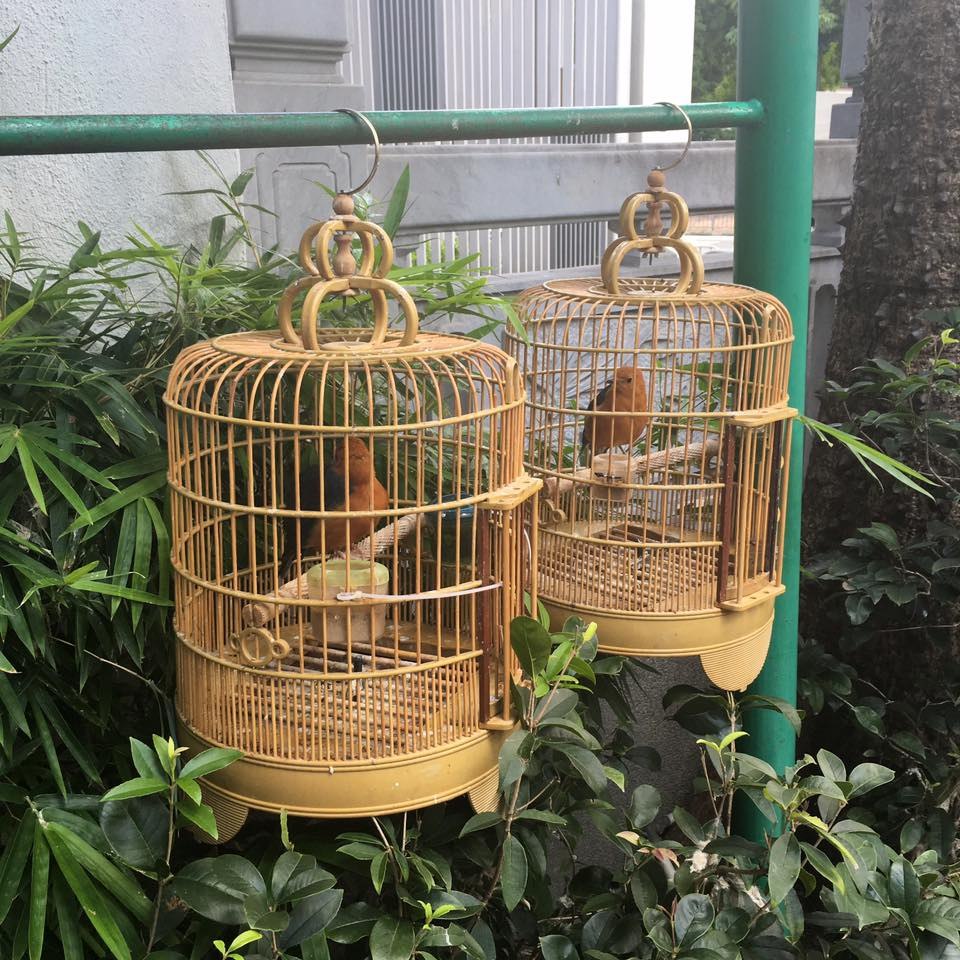
Central–Mid-Levels Escalator and Wet Markets
I went to the largest outdoor escalator system in the world (exciting, huh?) but it was actually pretty relaxing and there were lots of little markets around selling anything from knick-knacks to fruit to live fish to fresh meat.
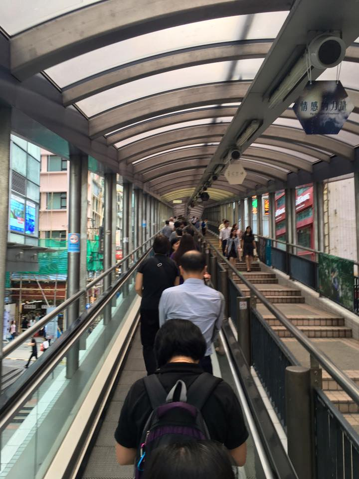Kowloon Walled City Park
I think the history of Kowloon Walled City is really interesting, but since it doesn't exist anymore, there's only Kowloon Walled City Park. I was in the neighborhood and had time so I walked around for a bit and saw some of the ruins they still had up. It was a pretty nice park but I wouldn't make a special point out of going unless you're already near it.
Pokemon Go!
The day I left was the day that Hong Kong got Pokemon Go. Taiwan still doesn't have it so this was my first chance to actually play! I had 30 minutes before I needed to leave for the airport so I walked around catching Pokemon and tons of other people were doing the same. Then at the airport I had time to kill so I charged my phone and walked everywhere catching a lot of Pokemon. Then it was back to Pokemon-less Taiwan :'(
A link to my full album of Hong Kong photos can be found here.
Questions? Comments? Don't hesitate to contact me!